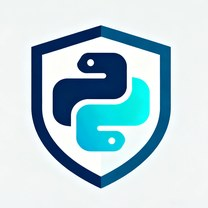

English · 简体中文

生成式 AI 正在降低理解、重构和复刻代码的门槛。pyobfus 在交付前提高 核心 Python 逻辑的分析成本，同时保留交付后的诊断和调试能力。
社区版采用 Apache-2.0 开源许可证，不限制文件数和代码行数，也不需要试用。
混淆是知识产权风险管理的一层，不替代服务端保密、合同或法律保护。
源码留在本机；社区版输出普通、跨平台的 Python 文件。
私有保存名称映射文件，可还原生产错误堆栈中的标识符，再交给开发者或 AI 编程助手分析。
构建前扫描和预览，构建后保留语法验证、构建来源记录与可复现报告。
社区版已覆盖可靠混淆、检查、验证和调试的完整本地工作流。需要保护商业交付物时， Pro 专业版在同一工作流上增加四类价值：
45 美元一次性购买，不是订阅；五天试用无需信用卡。
为避免价格和支付说明产生多个副本，最终购买步骤仍由英文产品页统一维护。
pip install pyobfus
pyobfus --check src/
pyobfus src/ -o dist/ --save-mapping mapping.json --verify-syntax输入/输出示例只维护一份，请查看英文项目说明中的 最小示例。